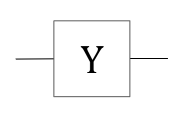
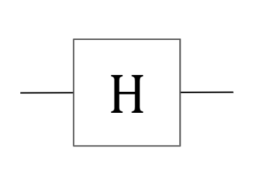
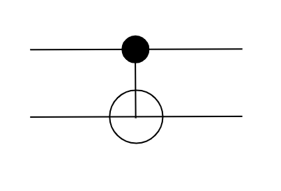

| Stability | experimental |
|---|---|
| Safe Haskell | None |
| Language | Haskell2010 |
Lib.Gates
Contents
Description
Module containing unitary gates and their matrix representations.
Synopsis
- pauliX :: QBit -> QM QBit
- pauliY :: QBit -> QM QBit
- pauliZ :: QBit -> QM QBit
- hadamard :: QBit -> QM QBit
- phase :: QBit -> QM QBit
- phasePi8 :: QBit -> QM QBit
- cnot :: (QBit, QBit) -> QM (QBit, QBit)
- identity :: QBit -> QM QBit
- swap :: (QBit, QBit) -> QM (QBit, QBit)
- tdagger :: QBit -> QM QBit
- fredkin :: (QBit, QBit, QBit) -> QM (QBit, QBit, QBit)
- toffoli :: (QBit, QBit, QBit) -> QM (QBit, QBit, QBit)
- urot :: Int -> QBit -> QM QBit
- crot :: Int -> (QBit, QBit) -> QM (QBit, QBit)
- qft :: [QBit] -> QM [QBit]
Unitary gates
pauliX :: QBit -> QM QBit Source #
Pauli-X gate
\[ \text{X} = \begin{bmatrix} 0 & 1 \\ 1 & 0 \end{bmatrix} \]

pauliY :: QBit -> QM QBit Source #
Pauli-Y gate
\[ \text{Y} = \begin{bmatrix} 0 & -i \\ i & 0 \end{bmatrix} \]

pauliZ :: QBit -> QM QBit Source #
Pauli-Z gate
\[ \text{Z} = \begin{bmatrix} 1 & 0 \\ 0 & -1 \end{bmatrix} \]

hadamard :: QBit -> QM QBit Source #
Hadamard gate
\[ \text{X} = \frac1{\sqrt2} \begin{bmatrix} 0 & 1 \\ 1 & 0 \end{bmatrix} \]

phase :: QBit -> QM QBit Source #
Phase gate
\[ \text{S} = \begin{bmatrix} 1 & 0 \\ 0 & i \end{bmatrix} \]

phasePi8 :: QBit -> QM QBit Source #
Pi/8 gate (T gate)
\[ \text{T} = \begin{bmatrix} 1 & 0 \\ 0 & e^{i\pi/4} \end{bmatrix} \]

cnot :: (QBit, QBit) -> QM (QBit, QBit) Source #
CNOT gate
\[ \text{CNOT} = \begin{bmatrix} 1 & 0 & 0 & 0 \\ 0 & 1 & 0 & 0 \\ 0 & 0 & 0 & 1 \\ 0 & 0 & 1 & 0 \end{bmatrix} \]

identity :: QBit -> QM QBit Source #
Identity gate
\[ \text{I} = \begin{bmatrix} 1 & 0 \\ 0 & 1 \end{bmatrix} \]
swap :: (QBit, QBit) -> QM (QBit, QBit) Source #
SWAP gate
\[ \text{SWAP} = \begin{bmatrix} 1 & 0 & 0 & 0 \\ 0 & 0 & 1 & 0 \\ 0 & 1 & 0 & 0 \\ 0 & 0 & 0 & 1 \end{bmatrix} \]

toffoli :: (QBit, QBit, QBit) -> QM (QBit, QBit, QBit) Source #
Toffoli gate
\[ \begin{bmatrix} 1 & 0 & 0 & 0 & 0 & 0 & 0 & 0 \\ 0 & 1 & 0 & 0 & 0 & 0 & 0 & 0 \\ 0 & 0 & 1 & 0 & 0 & 0 & 0 & 0 \\ 0 & 0 & 0 & 1 & 0 & 0 & 0 & 0 \\ 0 & 0 & 0 & 0 & 1 & 0 & 0 & 0 \\ 0 & 0 & 0 & 0 & 0 & 1 & 0 & 0 \\ 0 & 0 & 0 & 0 & 0 & 0 & 0 & 1 \\ 0 & 0 & 0 & 0 & 0 & 0 & 1 & 0 \end{bmatrix} \]